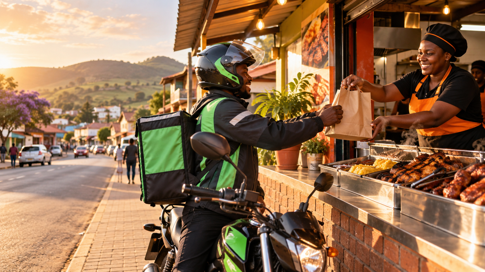

Customers
Discover local food and eligible products, save addresses, order, pay and track delivery from placement to handoff.

Starting in eXobho, KwaZulu-Natal
Local favourites. Delivered.
A local delivery marketplace for restaurants, shisanyamas, takeaways and approved stores, built around reliable zones, trusted riders and practical town-by-town growth.
Focused launch
Duze starts with a defined service area, 5-10 merchants and a small motorcycle rider fleet. The goal is dependable operations first: accurate availability, clear delivery eligibility, disciplined order states and admin-controlled fees.
Marketplace model
Discover local food and eligible products, save addresses, order, pay and track delivery from placement to handoff.
Manage profile, hours, menu items, prices, availability, incoming orders, preparation status and basic analytics.
Go online, receive delivery offers, navigate to pickup and drop-off, confirm handoff and review earnings.
Approve participants, configure zones and fees, monitor orders, manage disputes, run reports and maintain audit logs.
Product scope
The MVP flow is simple: browse, cart, checkout, merchant acceptance, rider assignment, pickup, delivery and rating. Each step is backed by a strict state machine so impossible transitions are blocked.
Accounts, saved addresses, search, category browsing, menus, item options, cart, checkout, order history, ratings, support and low-bandwidth friendly loading states.
Onboarding, verification, business hours, menu CRUD, sold-out toggles, live orders, preparation estimates, history, analytics and commission statements.
Approval, online status, delivery offers, pickup/drop-off information, navigation deep links, proof of delivery and earnings history.
Users, merchants, riders, orders, delivery zones, fee rules, commissions, promotions, disputes, reports, roles and audit events.
Architecture
Safety and compliance
Alcohol is treated as an optional age-restricted category, not ordinary food. It remains disabled until licensing, KZN-specific legal advice, merchant approval and handoff verification workflows are ready.
MVP path
Pilot metrics